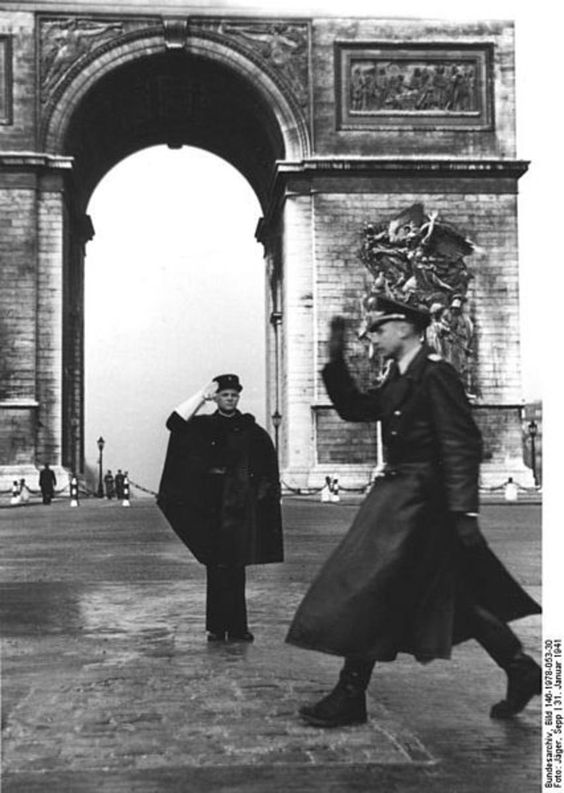

Francia en la Segunda Guerra Mundial: Resistencia, Colaboración y Legado Histórico
La participación de Francia en la Segunda Guerra Mundial es un tema complejo y multifacético que abarca desde la rápida derrota militar frente a la Alemania nazi hasta el surgimiento de un movimiento de resistencia activa y el establecimiento de un régimen colaboracionista en el sur del país. En este ensayo, exploraremos en detalle la participación de Francia en la Segunda Guerra Mundial, desde sus inicios hasta sus consecuencias a largo plazo.
Contexto Histórico: La Situación de Francia Antes de la Guerra
Para comprender plenamente la participación de Francia en la Segunda Guerra Mundial, es esencial examinar el contexto histórico que precedió al estallido del conflicto. Después de la Primera Guerra Mundial, Francia se encontraba en una posición difícil, con una economía debilitada, tensiones políticas internas y la amenaza creciente del expansionismo nazi en Alemania. El Tratado de Versalles, que puso fin a la Primera Guerra Mundial, impuso duras condiciones a Alemania, pero no pudo prevenir el resurgimiento del nacionalismo y el militarismo en el país. La ascensión de Adolf Hitler al poder en 1933 y la reanudación de la política expansionista alemana pusieron a Francia en una situación cada vez más precaria.
La Invasión de Francia y la Caída de la Tercera República
El 10 de mayo de 1940, las fuerzas armadas alemanas lanzaron una invasión relámpago de Francia, conocida como la Blitzkrieg, que rápidamente superó las defensas francesas y avanzó hacia el interior del país. A pesar de los esfuerzos desesperados de las fuerzas francesas y sus aliados para contener el avance alemán, la superioridad militar y táctica de los alemanes resultó abrumadora, y Francia se rindió en menos de dos meses. La caída de Francia fue un golpe devastador para la Tercera República Francesa y para la moral del pueblo francés en su conjunto. El gobierno francés se vio obligado a capitular y firmar un armisticio con Alemania, que dividió el país en una zona ocupada por los alemanes en el norte y oeste, y una zona de gobierno colaboracionista en el sur.
La Resistencia Francesa y la Francia Libre
A pesar de la derrota militar y la ocupación alemana, muchos franceses se negaron a aceptar la rendición y se unieron a la resistencia contra el régimen nazi y sus colaboradores. La Resistencia Francesa, formada por una variedad de grupos políticos y sociales, llevó a cabo una campaña de sabotaje, espionaje y sabotaje en todo el país, desafiando la autoridad alemana y colaboracionista. La Francia Libre, bajo el liderazgo del general Charles de Gaulle, surgió como un símbolo de la resistencia francesa y un bastión de la lucha por la libertad y la soberanía nacional. A pesar de la dificultad de operar en territorio ocupado, la Francia Libre organizó una serie de operaciones clandestinas y raids enemigos, y contribuyó significativamente a la liberación de Francia al final de la guerra.
La Colaboración Francesa y el Régimen de Vichy
Mientras que muchos franceses se unieron a la resistencia contra la ocupación alemana, otros colaboraron activamente con el régimen nazi y sus colaboradores franceses. El gobierno colaboracionista de Vichy, encabezado por el mariscal Philippe Pétain, cooperó estrechamente con las autoridades alemanas en la administración del país ocupado y en la persecución de sus políticas antisemitas y antirresistencia. La colaboración con el régimen nazi fue una fuente de división y conflicto dentro de la sociedad francesa, con algunos franceses colaborando por motivos políticos o económicos, mientras que otros se oponían activamente al régimen y se unían a la resistencia. La colaboración con el régimen nazi dejó una mancha indeleble en la historia de Francia y provocó una profunda división en la sociedad francesa que perduró mucho después del final de la guerra.
La Liberación de Francia y el Fin de la Ocupación
La liberación de Francia comenzó en serio en junio de 1944, con el desembarco de las fuerzas aliadas en Normandía, conocido como el Día D. El avance aliado desde las playas de Normandía hacia el interior de Francia fue acompañado por una serie de operaciones de resistencia y levantamientos populares contra las fuerzas de ocupación alemanas y sus colaboradores franceses. La liberación de París en agosto de 1944 marcó un punto de inflexión decisivo en la guerra y en la historia de Francia, con la ciudad siendo liberada por las fuerzas de la Francia Libre y la resistencia francesa en una serie de intensos combates callejeros. La caída de París fue seguida por la liberación gradual del resto de Francia y la rendición final de las fuerzas alemanas en el país en mayo de 1945.
El Legado de la Guerra y la Reconstrucción de Francia
La participación de Francia en la Segunda Guerra Mundial dejó un legado duradero en la historia del país y en la memoria colectiva de sus habitantes. La guerra dejó cicatrices profundas en la sociedad francesa, con millones de muertos, heridos y desplazados, y vastas áreas del país destruidas por los combates y la ocupación. La posguerra también fue un período de renovación y reconstrucción para Francia, con el gobierno trabajando para restaurar la estabilidad política, económica y social en el país y para enfrentar los desafíos de la reconstrucción y la reconciliación nacional. La creación de la Cuarta República Francesa en 1946 y la adopción de una nueva constitución fueron pasos importantes hacia la recuperación y la reconstrucción de Francia después de la guerra.
Conclusiones
La participación de Francia en la Segunda Guerra Mundial fue un capítulo oscuro y complejo en la historia del país, marcado por la derrota militar, la ocupación alemana y la lucha interna entre la resistencia y la colaboración. La guerra dejó un legado duradero en la sociedad francesa, con profundas divisiones y cicatrices que perduraron mucho después del final del conflicto. Sin embargo, la participación de Francia en la Segunda Guerra Mundial también fue un testimonio del coraje, la determinación y la resistencia del pueblo francés frente a la adversidad. La resistencia francesa, la Francia Libre y la liberación del país por las fuerzas aliadas son recordatorios del poder del espíritu humano y la capacidad de lucha por la libertad y la justicia en tiempos de crisis.
